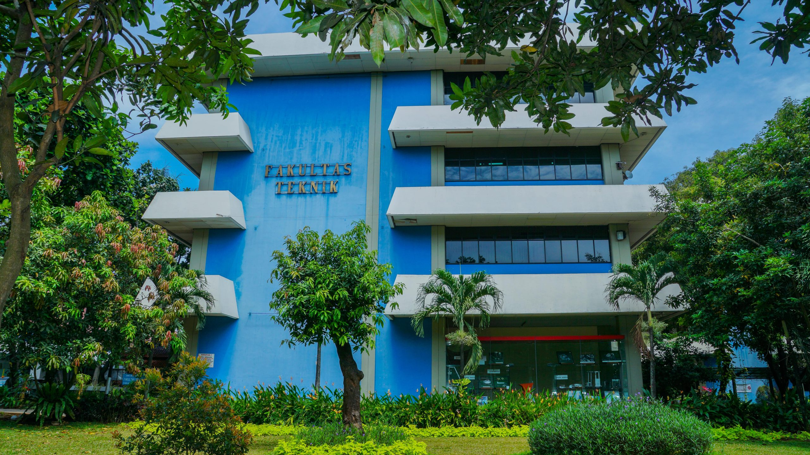

Ikatan Mahasiswa Teknik Informatika — Berkarya, Berinovasi, Berdampak
Profil Organisasi
IMATIKA (Ikatan Mahasiswa Teknik Informatika) merupakan organisasi
kemahasiswaan tingkat program studi yang berperan sebagai wadah
pengembangan potensi akademik maupun non-akademik mahasiswa Teknik
Informatika. Organisasi ini berfokus pada kegiatan pelatihan teknologi,
kompetisi, serta pengabdian kepada masyarakat.
Nama Organisasi
Ikatan Mahasiswa Teknik Informatika (IMATIKA)
Alamat Sekretariat
Jl. Raya Lenteng Agung No. RT.7/3, Srengseng Sawah, Kec. Jagakarsa, Kota Jakarta Selatan, DKI Jakarta 12630
Status Akreditasi Program Studi
A (Unggul)
Gedung Teknik

Bidang Keahlian
IMATIKA menaungi beberapa bidang keahlian yang dapat dipilih anggota
sesuai minat dan rencana pengembangan diri masing-masing.
Artificial Intelegence:
Mempelajari machine learning dan deep learning untuk menyelesaikan
permasalahan berbasis data.
Network & Cyber Security:
Berfokus pada konfigurasi jaringan, keamanan sistem, dan administrasi
server.
Data Science:
Mendalami pengolahan, visualisasi, dan analisis data untuk mendukung
pengambilan keputusan.
Software Engineer:
Berfokus pada pengembangan aplikasi web dan mobile menggunakan metode
pengembangan perangkat lunak terkini.
Aktivitas Rutin Setiap Bidang
Pelatihan mingguan sesuai bidang keahlian
Diskusi bersama alumni dan praktisi
Lomba internal antar bidang setiap semester
Proyek gabungan lintas bidang
Cara Bergabung
Tahapan berikut perlu diikuti secara berurutan oleh mahasiswa baru yang
ingin menjadi anggota IMATIKA:
Mengisi formulir pendaftaran yang dibagikan melalui panitia
Mengunggah KTM atau bukti registrasi ulang
Mengikuti wawancara minat dan bakat
Mengikuti masa orientasi anggota baru
Penempatan bidang berdasarkan hasil wawancara
Pelantikan sebagai anggota resmi IMATIKA
Ketentuan umum bagi calon anggota:
Berstatus mahasiswa aktif Program Studi Teknik Informatika
Bersedia mengikuti seluruh rangkaian orientasi
Berkomitmen aktif pada minimal satu bidang keahlian
Kontak & Media Sosial
Informasi lebih lanjut mengenai kegiatan, pendaftaran, maupun kerja sama
dapat diperoleh melalui kontak berikut.